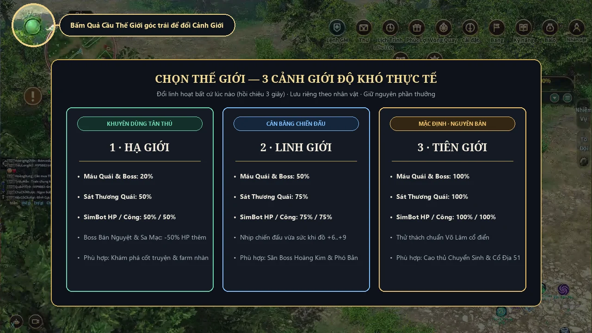

Mục lục chuyên đề Thế Giới & Bản Đồ (4 mục)
1. Chọn Thế Giới — 3 Cảnh Giới Độ Khó Linh Hoạt
Ngay góc trên bên trái màn hình (sát bên bản đồ nhỏ) là Quả Cầu Thế Giới. Nhấp vào đây để chuyển đổi ngay giữa 3 Cảnh Giới Độ Khó (hồi chiêu chỉ 3 giây, lưu riêng theo từng nhân vật và giữ nguyên phần thưởng rơi đồ):

| Cảnh Giới Thế Giới | Máu Quái & Boss | Sát Thương Quái | SimBot (HP / Công) | Ưu Đãi & Phù Hợp |
|---|---|---|---|---|
| 1 · Hạ Giới | 20% | 50% | 50% / 50% | Boss Bán Nguyệt & Sa Mạc giảm thêm -50% HP · Khuyên dùng cho tân thủ & farm nhàn |
| 2 · Linh Giới | 50% | 75% | 75% / 75% | Nhịp chiến đấu cân bằng khi đã có trang bị +6 .. +9 |
| 3 · Tiên Giới (Mặc định) | 100% | 100% | 100% / 100% | Nguyên bản chuẩn Võ Lâm cổ điển · Phù hợp cao thủ Chuyển Sinh & Cổ Địa 51 |
2. Thần Hành Phù 7 Dòng & Trở Lại Địa Điểm Cũ
Thần Hành Phù (đặt sẵn ở phím nhanh 4) là trung tâm điều phối mọi hành trình trong Kiếm Võng Giang Hồ với 7 nhánh chức năng:
| Dòng Menu | Chức Năng Chi Tiết |
|---|---|
| ① Túi Đồ | Mở Sử dụng nhanh, Phân Giải Đồ Dư, Tự Phân Giải Khi Nhặt, Rương Thủ Khố Từ Xa, Tiệm Tạp Hóa Từ Xa, Cường Hóa, Tiềm Năng và Kế Thừa Cường Hóa. |
| ② Phó Bản | Dịch chuyển trực tiếp tới 5 đại phó bản: Bán Nguyệt, Sa Mạc, Thông Thiên Tháp, Phong Lăng Độ và Cổ Địa Hoa Sơn. |
| ③ Bản Đồ Luyện Công | Chọn trực tiếp mọi bãi train dã ngoại theo từng cấp độ từ Lv.10 đến Lv.250. |
| ④ Luyện Công VIP | Khu bãi train mật độ cao (miễn phí khi có Thẻ VIP hoặc 50.000 Tiền Đồng/lần). |
| ⑤ Báo Danh Hoạt Động | Vào nhanh Chiến Trường Tống Kim 25v25, Thuyền Phong Lăng Độ, Võ Lâm Đại Hội và các sự kiện mở theo giờ. |
| ⑥ Đến NPC Chức Năng | Tự chạy/dịch chuyển thẳng tới Thợ Rèn, Thợ Rèn Thần Bí, Dã Tẩu, Lễ Quan, Thủ Khố... |
| ⑦ Trở Lại Địa Điểm Cũ | Khi dùng Thổ Địa Phù (phím 5) về thôn sửa đồ/cất đồ từ bản đồ dã ngoại hoặc Cổ Địa Hoa Sơn (Map 51), vị trí cũ được tự động ghi nhớ để bạn quay lại đúng bãi train trong 1 bấm (không lưu phó bản giới hạn lượt). |
3. Lộ Trình Bản Đồ Luyện Công (Lv.10 → Lv.250) & Phân Tầng Tiềm Năng
Tất cả 42 bản đồ dã ngoại đều được phân bố mật độ quái 3× phủ đều mặt đất, xáo trộn đa dạng từ 3 loài quái trở lên mỗi bãi (30% bãi có Quái Xanh, 10% bãi có Quái Tím) và đồng thời xuất hiện ngẫu nhiên tối đa 3 Boss Hoàng Kim/bản đồ (máu gấp 2× Quái Tím, sát thương 3× Quái Tím) để bạn vừa train vừa săn Điểm Khí Vận!
| Giai Đoạn Cấp Độ | Khu Vực & Bản Đồ Tiêu Biểu | Nguồn Rơi Trang Bị & Mục Tiêu |
|---|---|---|
| Lv.1 → Lv.20 | Vân Mộc Linh Thôn (Nhiệm Vụ Tân Thủ 11 bước) | Hoàn thành 11 bước nhận +13 cấp, nhận Thất Nhật Lễ & làm quen Thần Hành Phù. |
| Lv.20 → Lv.80 | Các bản đồ dã ngoại phân vùng 20 · 30 · 40 · 50 · 60 · 70 · 80 | Quái đã được giảm nhẹ máu/sát thương theo bậc cấp để tân thủ lên cấp cực mượt; mở Hộp Trưởng Thành. |
| Lv.90 → Lv.120 | Bãi luyện công 90–120, Thông Thiên Tháp (205), Dã Tẩu | Săn set Hoàng Kim đầu tay, vượt Bình Cảnh Tâm Ma (Lv.115–120), gom Điểm Khí Vận quay Thiên Cơ. |
| Lv.130 → Lv.200 | Bãi 130–200, Phong Lăng Độ (206), Bán Nguyệt (105), Sa Mạc (106) | Lập đội 3 SimBot săn Bạch Long (5570), nâng đồ +9..+12, đục 4 lỗ & khảm ngọc. |
| Lv.200 → Lv.250+ | Bãi 210–250, Cổ Địa Hoa Sơn (51), Cửu Tiêu Tháp (208) | Làm chuỗi Chuyển Sinh Lv.200, giải đố Kinh Dịch rèn Kiếm Thần Long & thăng Bạch Kim. |
Phân Tầng Tỉ Lệ Rơi Trang Bị Theo Chỉ Số Tiềm Năng (42 → 90)
Quái Dã Ngoại & Quái Xanh/Tím
Nguồn rơi ổn định nhất cho giai đoạn đầu và giữa game để phân giải lấy tinh hoa hoặc trích xuất dòng thuộc tính.
Boss Hoàng Kim Dã Ngoại & Phó Bản
Boss Hoàng Kim có tỉ lệ rơi cực phẩm Tiềm Năng 70 (0.01%) và Tiềm Năng 80 (0.001%) — nhớ kéo 3 SimBot để nhân tỉ lệ!
Boss Thông Thiên Tháp Tầng 25+
Mốc Tiềm Năng hiếm nhất toàn game (0.0001%) chỉ xuất hiện từ Boss tầng 25 trở lên tại Thông Thiên Tháp.
4. Chơi Tự Do Lv.120, Tu Vi Tích Trữ & Chuyển Sinh Lv.200
Tu Vi Tích Trữ & Thử Đột Phá Map 50
- Toàn bộ hành trình từ Lv.1 đến Lv.120 mở cửa hoàn toàn miễn phí trên cả PC Windows và Android!
- Khi chạm trần Lv.120, mọi EXP tiếp theo tự động lưu vào kho Tu Vi Tích Trữ (không mất một điểm nào) và bạn được vào thử thách Map 50 bất cứ lúc nào.
Tăng Trần Kỹ Năng (Tối Đa Cấp 35)
- Đạt Lv.200, tới gặp Lễ Quan / Võ Chấn Thiên nhận chuỗi Chuyển Sinh: hạ 200 Quái Tím & nộp 200–600 Chuyển Sinh Đan.
- Hoàn thành sẽ trở về Lv.1 nhưng giữ nguyên trang bị/kỹ năng, tăng mạnh thuộc tính nền và mở rộng trần cấp kỹ năng lên
30 + Số lần Chuyển Sinh(tối đa35)!